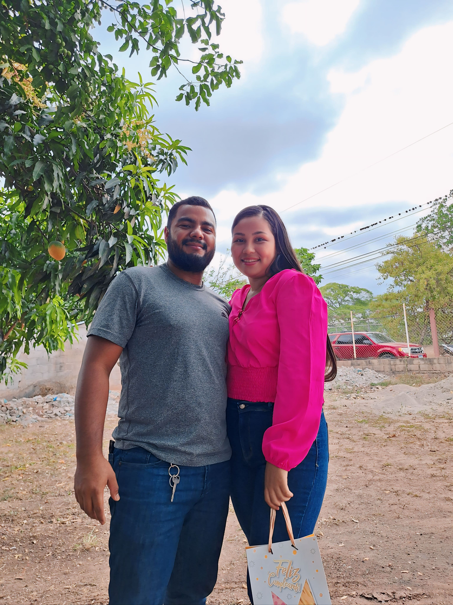
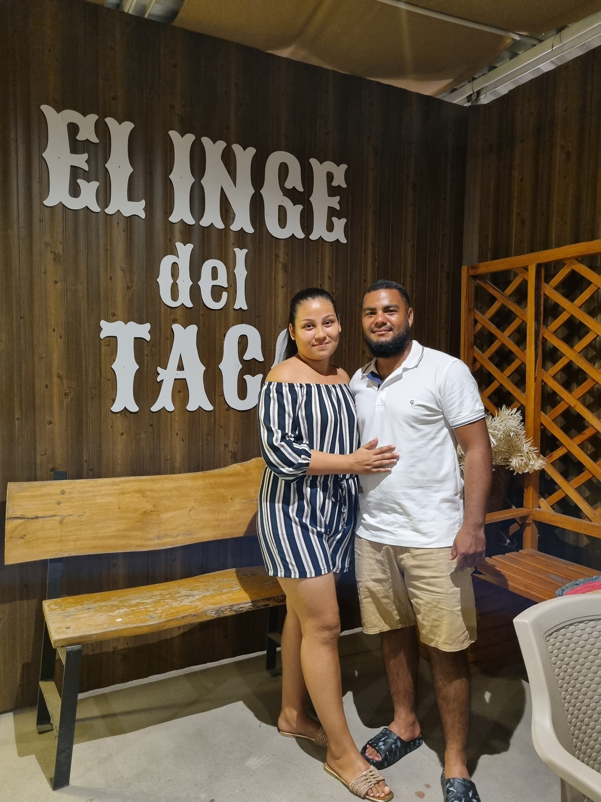
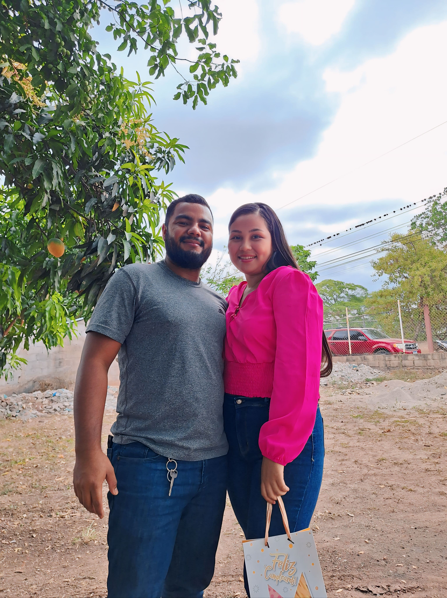
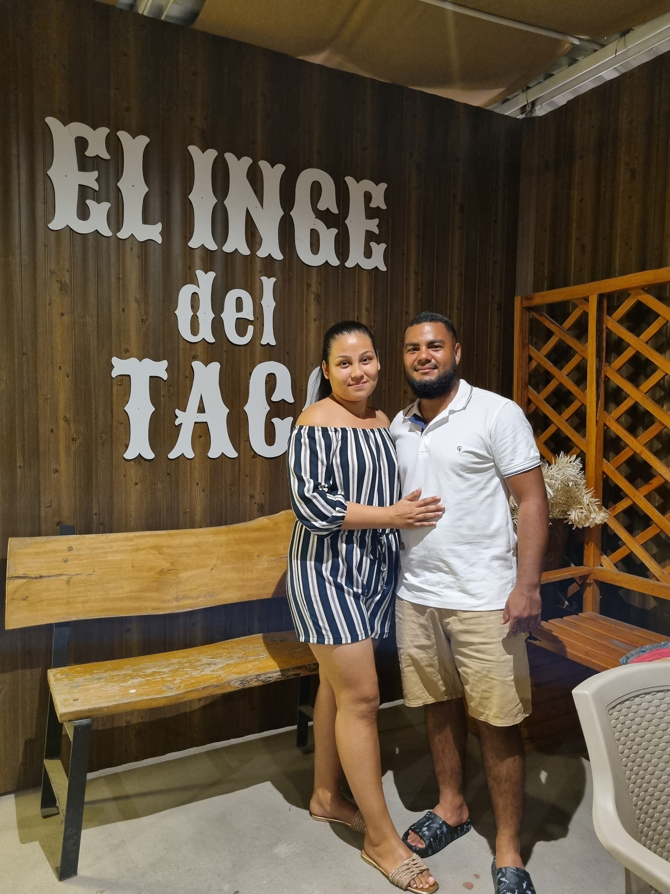
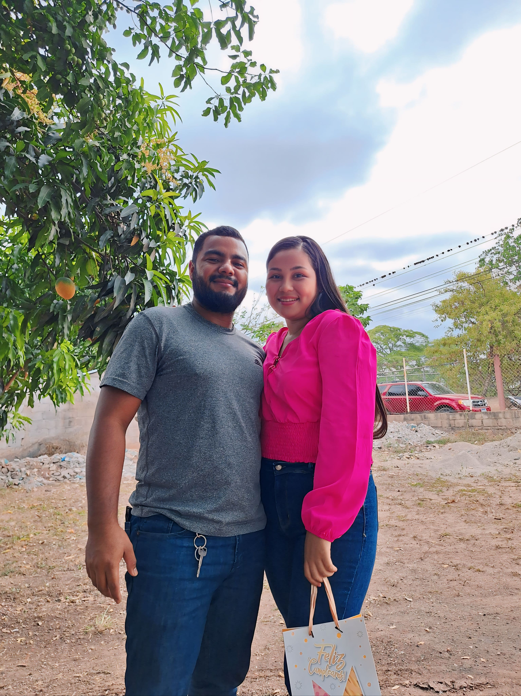
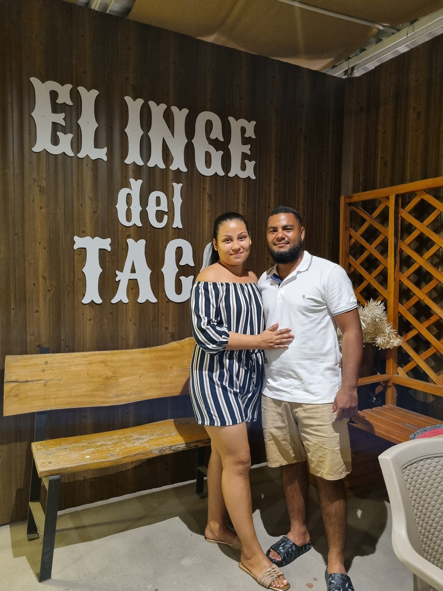

Hola, mi amor bonito ❤️
Hoy es un día muy especial para nosotros, nuestro primer año juntos. Hice este pequeño detalle virtual con la intensión
de hacerlo sentir especial y este día quede grabado en su memoria (que no es muy buena, pero aja jajaja) porque
aunque la distancia nos separe físicamente, quiero recordarle cuánto lo amo y lo importante que es para mí.
Ha sido un año lleno de momentos únicos, de risas que guardo como tesoros y de aprendizajes que nos han hecho más fuertes.
Gracias por ser mi apoyo, mi confidente, mi compañero y, sobre todo, el amor de mi vida. Gracias por los pequeños gestos que hacen que cada día a su lado sea maravilloso.
Gracias por enseñarme a amar de una manera tan pura y sincera.
Hoy celebro no solo este año que hemos compartido, sino también todo lo que está por venir. Sueño con todo lo que construiremos juntos,
con los momentos que aún nos esperan, con los abrazos que compensarán todos los días de cada semana que hemos estado lejos y con un futuro donde la distancia sea solo un recuerdo.
Lo amo más de lo que las palabras pueden expresar, y cada día me siento más afortunada de tenerlo en mi vida.
Feliz aniversario, mi amor bonito. ❤️
Con todo mi amor, su Currucutungu. 💙

